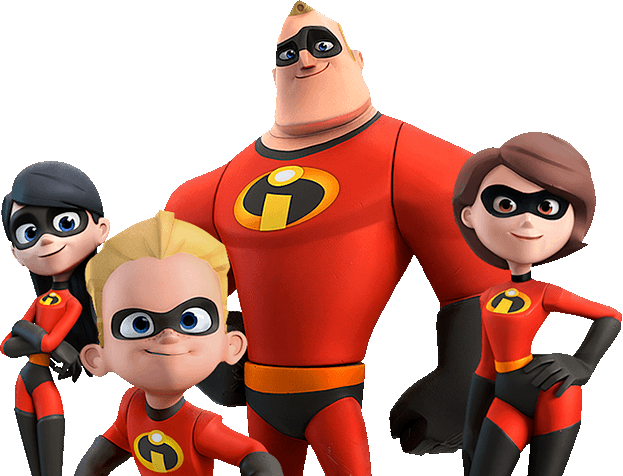
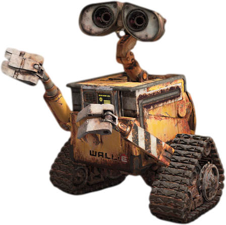
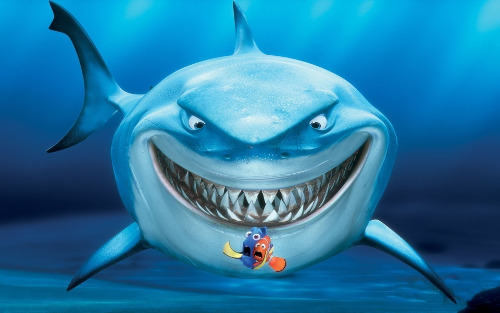
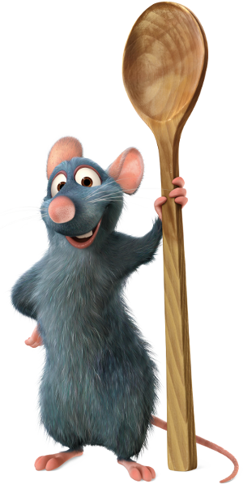
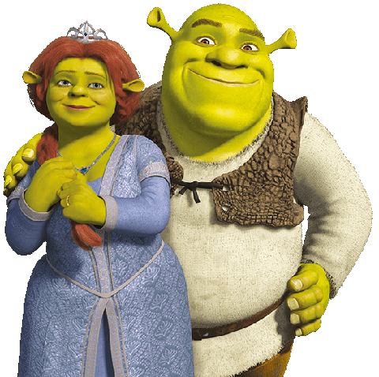

Ice Age, Shrek, Ratatouille, Up, The Incredibles. On the face of it, they’re fun children’s films with colourful, animated characters and lots of visual gags. But there are also things that adults will enjoy: complex jokes, cultural references and backdrops that include adult-related topics and themes based on politics, history or modern culture. This is known as “The Simpsons effect” – making animated films as much about entertaining parents as children.
Basically, modern, animated films work on two levels. For children, there are attractive, colourful cartoon characters with funny voices and amazing graphics who can do all sorts of weird and wonderful things. But for adults in the audience there are subtle allusions to other films, clever plays on words and jokes that will be all but lost on the children. But this doesn’t matter as the kids will be focusing on the graphics and visual aspect of the film. Also, the characters often have very adult human emotions that include suspicion, mistrust, vanity, self-delusion, rejection, disappointment, jealousy and forgiveness, plus they are also capable of being spiteful, vengeful, aggressive, hurtful and even violent. Let’s look at a few examples.
The Incredibles is about a family of undercover superheroes with super-human abilities. They can fly, change shape and adapt their bodies to perform all sorts of tricks. Mr Incredible (Bob Parr) is the central character. He lives with his wife Helen (aka Elastigirl) and their three children. They are the world's greatest famous crime-fighting superheroes, but they’ve been forced to adopt civilian identities and live a “normal life”. Bob is desperate to be a superhero again. One day, he gets his chance when a mysterious message calls him to a remote island for a top secret assignment.
Children like the film for the visual graphics and amazing stunts. But the film appeals to adults too, and many of the themes are far from childlike. The film is set in the suburbia of the 1950s and 60s and focuses on adult issues such as work frustration, being open and honest with your partner, and how to deal with a sense of meaninglessness.
Wall-E is a computer-generated, science-fiction film about a robot called Wall-E. He is one of an army of “trash compactor” robots who is cleaning up the planet. One day, another robot called Eva arrives, and WALL-E is no longer alone.
The kids love WALL-E because of the funny noises he makes, his quirky habits and his cockroach buddy. Adults appreciate the film too because of the larger topics that it touches on, such as mass consumerism, politics, environmentalism and the destruction of the planet. In fact, the background story is actually quite complex. Mass consumerism and waste has led to the destruction of the planet. As a result, the Buy ‘n’ Large megacorporation (which governs Earth) has evacuated the Earth’s population on fully automated luxury starliners for five years while the “WALL-E” robots clean up the mess. But the plan fails and humanity is forced to remain in space indefinitely. Seven hundred years later, in 2805, only one WALL-E remains active.
This film is about a little clownfish, Nemo. His dad, Marlin, takes care of him after Nemo’s brothers and sisters and mum are eaten by a barracuda. On Nemo’s first day at school, the other kids tease him about his overprotective dad. So, Nemo decides to swim into the open waters to prove that he can look after himself. But he’s scooped up by a scuba diver and taken away to captivity. Nemo’s dad then sets out on a mission to rescue his son, while Nemo is determined to escape from the fish tank where he’s been placed.
Kids love the film, but adults also enjoy it because of the themes that it touches on. These include the pain of growing up, losing your innocence, taking risks, becoming independent and knowing when to let your children go. There are a number of cultural references in the film that adults will pick up on. In one scene, there’s an allusion to Hitchcock’s The Birds. In another scene, a group of sharks are considering forming a type of Alcoholics Anonymous group to help them give up fish.
Ratatouille is another film that does a good job of appealing to both adults and children. On a very basic level, it’s a delightful animated film about a lovable, determined and gifted little rat called Remy – the film’s hero who dreams of becoming a chef. One day Remy and his family are evicted from the house where they live. After escaping near death, Remy ends up separated from his family and in the kitchen of a Parisian restaurant. He makes friends with Linguini, the restaurant dish-washer, and together they form a professional partnership that brings them fame and success.
Kids love to watch little Remy, but the film works well for adults too. It’s fast-paced, funny, and with a great message: no matter who you are, always reach for your dreams and don’t let anyone tell you that you can't achieve them. There’s also a Parisian love affair and a complex storyline that includes professional jealousy, revenge and evil scheming.
Finally, Shrek is a great example of a film that works perfectly for both children and adults (particularly those with a childish sense of humour). Shrek is the story of a green ogre who lives alone in a swamp. One day, his life is disrupted when a large group of fairytale creatures turns up. They’ve been sent there by Lord Farquaad – the ruler of the castle and town of Duloc. Lord Farquaad is obsessed with having a normal kingdom, and doesn’t want any of the creatures ruining his ideas of perfection. Shrek decides to go and find Lord Farquaad to persuade him to take the creatures back.
The film works wonderfully well for children, with the amazing graphics, the hilarious characters and the numerous gags. But for adults there are lots of great moments and hilarious jokes. Shrek is certainly not the first film to have jokes aimed at adults, but the sheer number of them makes it stand out.
In a way, there’s nothing new about films or stories that appeal to both children and adults. In fact, the mark of a good children’s story has always been a tale told on multiple levels that are full of hidden messages. The Wizard of Oz was a fantasy adventure and political satire all rolled into one. Cinderella is about the evils of envy, Little Red Riding Hood is about the dangers of disobedience, and Rumpelstiltskin is about overcoming obstacles.
However, in all cases, the film has to have a good story as its base. After all, no child or adult is going to sit through a film with a bad storyline – no matter how good the jokes are! ✻
